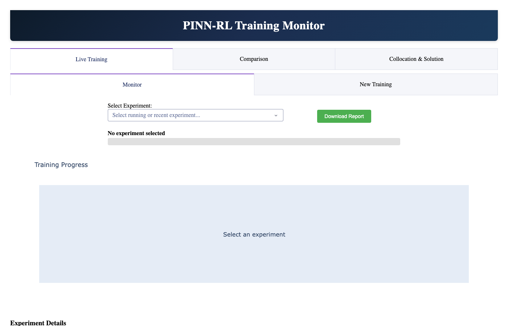
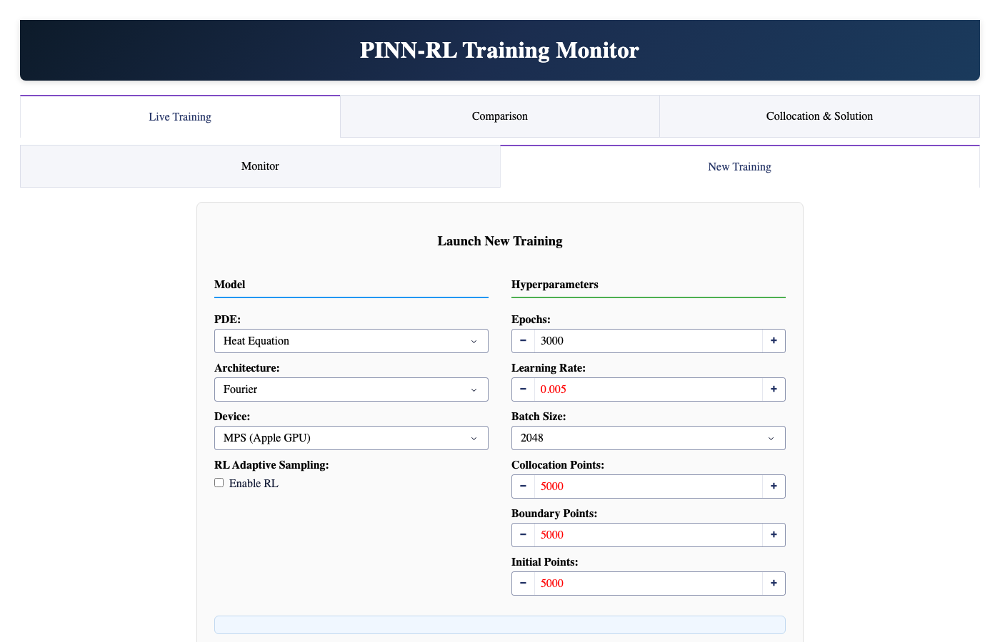
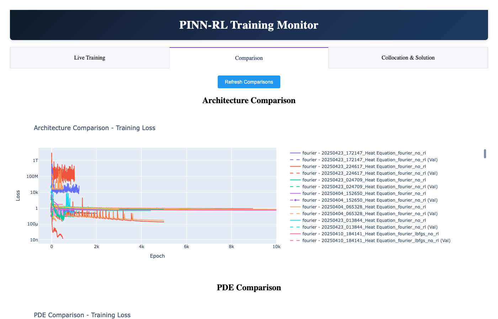
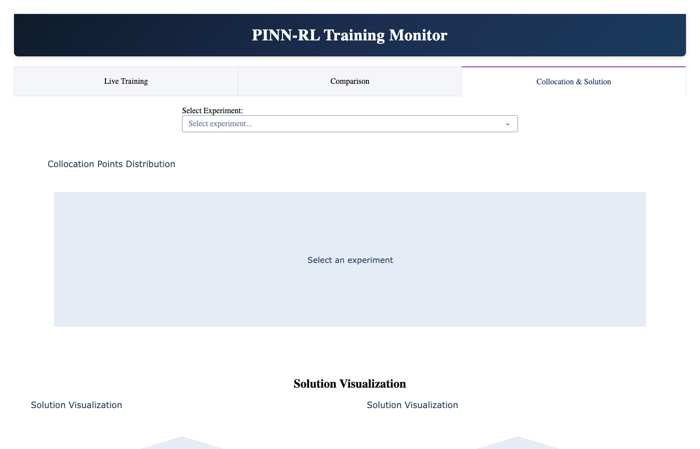

Dashboard Guide¶
The pinnrl dashboard is a browser-based interface for configuring, launching, and monitoring PINN training experiments. It replaces the need for manual CLI invocations and plotting scripts.
Launching the dashboard¶
Open http://127.0.0.1:8050/ in your browser.
Layout overview¶
The dashboard is organized into three tabs:
| Tab | Purpose |
|---|---|
| Live Training | Launch new experiments and monitor running/completed ones |
| Comparison | Compare architectures and PDEs side by side |
| Collocation & Solution | Visualize collocation point distributions and solution surfaces |
Live Training¶
The Live Training tab has two sub-tabs: Monitor and New Training.
Monitor¶
Select any experiment from the dropdown to see its training progress, loss curve, and current status.

The monitor displays:
- Experiment selector — dropdown listing all experiments in the
experiments/directory - Progress bar — shows epoch progress for running experiments
- Loss graph — total loss, residual loss, boundary loss, and initial condition loss over epochs
Experiments are auto-detected from the experiments/ directory. Running experiments show a .running indicator and refresh automatically.
New Training¶
Configure and launch a new training run directly from the browser.

Model Configuration (left column):
- PDE — select from 9 supported PDEs. Changing the PDE auto-selects the recommended architecture.
- Architecture — choose from 7 neural architectures (feedforward, resnet, siren, fourier, fno, attention, autoencoder).
- Device — CPU, MPS (Apple Silicon), or CUDA.
- RL Adaptive Sampling — toggle to enable the DQN-based collocation agent.
Hyperparameters (right column):
- Epochs — number of training epochs (default: 3000)
- Learning Rate — optimizer learning rate (default: 0.005)
- Batch Size — training batch size (default: 2048)
- Collocation Points — interior sampling points (default: 5000)
- Boundary Points — boundary condition points (default: 500)
- Initial Points — initial condition points (default: 500)
Click Start Training to launch. Training runs as a background process — you can close the browser and results are saved automatically to a timestamped directory under experiments/.
Comparison¶
Compare training results across architectures or PDEs.

Select completed experiments to overlay their loss curves and accuracy metrics. This is useful for:
- Benchmarking architectures on the same PDE
- Comparing convergence rates across different hyperparameter choices
- Identifying which architecture best suits a particular equation type
Collocation & Solution¶
Visualize the trained solution surface and collocation point distribution for any completed experiment.

- Solution surface — 3D plot of the predicted
u(x, t)field - Exact solution overlay — compare against the analytical solution
- Collocation points — scatter plot showing where training points were sampled
- Time slider — scrub through time to see solution evolution
This tab loads the saved model checkpoint and reconstructs the solution on a dense grid for visualization.
Experiment directory structure¶
Each training run creates a directory under experiments/:
experiments/
20260310_143000_Heat Equation_fourier_no_rl/
config.yaml # full config snapshot
metadata.json # status, timing, PDE, architecture
final_model.pt # trained model weights
loss_curve.png # training loss plot
solution_plot.png # predicted vs exact solution
metrics.json # L2 error, max error, mean error
visualizations/ # additional plots
While training is in progress, a .running marker file is present. It is removed when training completes or fails.
Tips¶
- Start simple: Use the Heat Equation with Fourier Features and 3000 epochs for your first run. It converges reliably and lets you verify the setup works.
- Architecture recommendations: The PDE dropdown auto-selects a recommended architecture. These defaults come from extensive benchmarking and are a good starting point.
- RL sampling: Enable RL adaptive sampling for nonlinear PDEs with sharp gradients (Burgers, Allen-Cahn). For smooth problems (Heat, Wave), uniform sampling is sufficient.
- Monitor convergence: If the loss plateaus early, try increasing collocation points or switching architectures before increasing epochs.